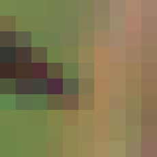
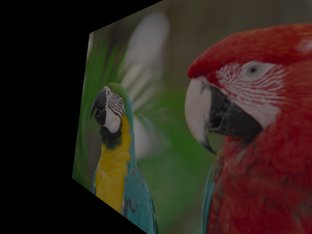

Files:
OVERVIEW
For this assignment, I implemented reconstruction ("demosaicking") of a Bayer pattern image into an RGB image using Cg vertex and fragment programs. A stream of incoming Bayer pattern data is reconstructed in real-time and written into an OpenGL texture. My sample program demonstrates a rotatable quad textured with the reconstructed image to emphasize the flexibility offered by having the reconstructed image available as a texture in real-time. My sample program also uses other vertex and fragment programs to allow color adjustments like brightness, contrast, and grayscale.
BACKGROUND
Digital cameras commonly use only a single CCD to capture an image. Therefore, these cameras capture only a single luminance value for each image pixel. To support color imaging with a single CCD, a color filter array (CFA) typically covers the CCD and only allows particular wavelengths of light to pass through at each pixel. The Bayer pattern [1] is a common CFA pattern. A Bayer pattern CFA passes through red, green, or blue light to each pixel in a pattern composed of repeating 2x2 blocks of R-G-G-B:
To reconstruct an RGB image from Bayer pattern data, the two missing color values at each pixel are interpolated from the pixel's neighboring color values. Bilinear interpolation is fast and simple compared to other techniques [2] but gives satisfactory results.
In bilinear interpolation of a Bayer pattern image, the green component at red and blue Bayer pattern pixels is simply the average of the north, east, south, and west neighbors, because every red and blue pixel has four green pixels surrounding it in those directions.
At a green pixel in a Bayer pattern image, the red and blue components are the average of the two adjacent red or blue pixels. The two adjacent pixels can be horizontally or vertically adjacent.
At red and blue pixels in a Bayer pattern image, the missing blue or red component is the average of the four diagonally-neighboring north-east, north-west, south-east, and south-west pixels.
Here is a Bayer pattern image:

Here is the above image after being processed by my vertex and fragment programs:

IMPLEMENTATION
The impetus for implementing Bayer pattern reconstruction using vertex and fragment programs stems from a component of a research project that transfers a stream of images from a color digital video camera across a network to be displayed. Bandwidth could be conserved and latency could decrease if the raw Bayer pattern images were transferred across the network instead of the RGB image reconstructed automatically by the camera; the Bayer pattern image is one-third the size of the RGB image. If the receiving computer could send the Bayer pattern image directly to the graphics card for display instead of performing the interpolation on the CPU, then the CPU would be freed for other tasks.
I originally wrote a Bayer pattern renderer using fixed-function OpenGL. The renderer first decomposes the Bayer pattern image into four half-resolution images that each contain one of the red, blue, and two green color channels. The renderer accomplishes this through texture mapping, using nearest-neighbor interpolation with the correct offsets to isolate each color channel. These four half-resolution color channels are then magnified to the full resolution using bilinear texture interpolation and composited using multitexturing and blending. This method runs at around 200 frames per second on my test system, but it results in somewhat blurry images. There is no guarantee that the known color intensities from the Bayer pattern image will remain intact in the computed RGB image; the method is not pixel-exact.
The Bayer pattern reconstruction performed by my Cg vertex and fragment programs is pixel-exact and gives higher quality results than my previous method.
My Cg Bayer pattern reconstruction works by loading the vertex and fragment programs and drawing a quad the size of the Bayer pattern image using an orthographic projection. Therefore, each generated fragment corresponds to a single pixel in the Bayer pattern image. In order to properly compute the two missing color components at a pixel, we must know which color pixel in the Bayer pattern image we are processing.
It would probably be slow to load and run a different fragment program for each of the colors in the Bayer pattern. Therefore, a single fragment program is run for all the fragments, but the program is able to efficiently compute which color Bayer pixel it is processing. This is accomplished through a texture lookup into a 2x2 RGBA texture defined as:
const GLfloat MASK[] =
{
0.0, 1.0, 0.0, 0.0, 0.0, 0.0, 1.0, 0.0,
1.0, 0.0, 0.0, 0.0, 0.0, 0.0, 0.0, 1.0
}
Each of the four texels in this "color mask" represents one of the
color channels in the Bayer pattern. Note that I consider there to be
two green color channels, each layed out like the red and blue
components in the Bayer pattern. Although this texture is only 2x2, I
set the texture wrap in both directions to repeat. The repeat texture
coordinate wrap allows this 2x2 texture to function as if it were the
full size of the Bayer pattern image, with this 2x2 pattern repeated
throughout the texture.
In order to compute the averages for bilinear interpolation, the fragment program must lookup all the surrounding pixels' values. The fragment program could compute the texture coordinates of these pixels itself, but instead I compute them in the vertex program. For this application, computing the texture coordinates in the vertex program results in the correct interpolated texture coordinates being passed to the fragment program. Additionally, this saves a few instructions in the fragment program. Because the fragment programs typically run many more times than vertex programs, this simplification of the fragment program increases performance.
The code for the vertex program is:
void
bayerv (float2 position : POSITION,
float2 texCoord : TEXCOORD0,
out float4 oPosition : POSITION,
out float2 oTexCoord : TEXCOORD0,
out float4 oTexCoord_ne_nw : TEXCOORD1,
out float4 oTexCoord_n_s : TEXCOORD2,
out float4 oTexCoord_e_w : TEXCOORD3,
out float4 oTexCoord_se_sw : TEXCOORD4)
{
oPosition = float4 (position, 0, 1);
oTexCoord = texCoord;
// Calculate texture coordinates of neighboring fragments.
oTexCoord_ne_nw.xy = texCoord + 1;
oTexCoord_ne_nw.zw = texCoord + float2 (-1, 1);
oTexCoord_n_s.xy = texCoord + float2 (0, 1);
oTexCoord_n_s.zw = texCoord - float2 (0, 1);
oTexCoord_e_w.xy = texCoord + float2 (1, 0);
oTexCoord_e_w.zw = texCoord - float2 (1, 0);
oTexCoord_se_sw.xy = texCoord - float2 (-1, 1);
oTexCoord_se_sw.zw = texCoord - 1;
}
The vertex program passes through the position and texture coordinate.
It also calculates the texture coordinates of most of the neighboring
pixels. Because I use rectangular textures, the texture coordinates
are integers. I can just add or subtract 1 from the texture
coordinates to find the neighboring texture coordinates. I pack the
center texture coordinate and the eight neighboring texture
coordinates into five texture units.
void
bayerf (float4 position : POSITION,
float2 texCoord : TEXCOORD0,
float4 texCoord_ne_nw : TEXCOORD1,
float4 texCoord_n_s : TEXCOORD2,
float4 texCoord_e_w : TEXCOORD3,
float4 texCoord_se_sw : TEXCOORD4,
uniform samplerRECT bayer,
uniform sampler2D mask,
out float4 color : COLOR)
{
// Fetch Bayer texture color at neighboring fragments.
float bayer_ne = texRECT (bayer, texCoord_ne_nw.xy).r;
float bayer_nw = texRECT (bayer, texCoord_ne_nw.zw).r;
float bayer_n = texRECT (bayer, texCoord_n_s.xy).r;
float bayer_s = texRECT (bayer, texCoord_n_s.zw).r;
float bayer_e = texRECT (bayer, texCoord_e_w.xy).r;
float bayer_w = texRECT (bayer, texCoord_e_w.zw).r;
float bayer_se = texRECT (bayer, texCoord_se_sw.xy).r;
float bayer_sw = texRECT (bayer, texCoord_se_sw.zw).r;
float bayer_center = texRECT (bayer, texCoord).r;
// Calculate averages.
float horizontal = 0.5 * (bayer_w + bayer_e);
float vertical = 0.5 * (bayer_n + bayer_s);
float diagonal = 0.25 * (bayer_nw + bayer_ne + bayer_sw + bayer_se);
float adjacent = 0.25 * (bayer_n + bayer_s + bayer_e + bayer_w);
// Calculate mask values.
// color_mask.r is 1.0 if this is a red pixel in the Bayer image
float4 color_mask = float4 (tex2D (mask, 0.5 * texCoord));
// Calculate fragment color.
color.r =
color_mask.r * bayer_center +
color_mask.b * diagonal +
color_mask.g * vertical +
color_mask.a * horizontal;
color.g =
color_mask.g * bayer_center +
color_mask.a * bayer_center +
color_mask.b * adjacent +
color_mask.r * adjacent;
color.b =
color_mask.b * bayer_center +
color_mask.r * diagonal +
color_mask.g * horizontal +
color_mask.a * vertical;
}
The fragment program first performs texture lookups of the Bayer pattern image at the neighboring texture coordinates passed in by the vertex program. It then calculates all the averages used for the bilinear interpolation.
Next, the fragment program assigns color_mask by performing a texture lookup in the color mask texture. The texture coordinates for this lookup are simply half the current fragment's texture coordinates. The texture coordinates for the Bayer pattern rectangle texture have the range ([0..w], [0..h]) and the texture coordinates for the color mask have the range ([0..1], [0..1]). Because the color mask uses repeating texture coordinates, only the fractional part of the texture coordinates matter. Therefore, if the current fragment has an even s texture coordinate, for example, 0.5 * s has a 0 fractional component. On the other hand, if the current fragment has an odd s texture coordinate, then 0.5 * s has 0.5 as its fractional component. Because the color mask has only two texels in each dimension and uses nearest-neighbor interpolation, a texture coordinate of 0.0 hits one texel and a texture coordinate of 0.5 hits the other texel.
After the fragment program performs the color mask texture lookup, color_mask is all zeros except in one component, the component that represents the color of the current fragment in the Bayer pattern. The alpha value represents the second green channel.
Finally, the fragment program computes the fragment color. For each of the (r,g,b) color components, the fragment program uses the color mask to include only the arithmetic term necessary for the fragment's Bayer pattern color. For example, the red component at a blue Bayer pattern pixel is the average of the diagonal neighbors' color values. Because color_mask.b is 1.0 and the only component of color_mask that is non-zero, only the diagonal term is added to color.r:
// example: at blue Bayer pattern pixel // red pixels are on diagonals // green pixels surround horizontally and vertically color.r = color_mask.r * bayer_center + // 0 color_mask.b * diagonal + // diagonal color_mask.g * vertical + // 0 color_mask.a * horizontal; // 0 color.g = color_mask.g * bayer_center + // 0 color_mask.a * bayer_center + // 0 color_mask.b * adjacent + // adjacent color_mask.r * adjacent; // 0 color.b = color_mask.b * bayer_center + // bayer_center color_mask.r * diagonal + // 0 color_mask.g * horizontal + // 0 color_mask.a * vertical; // 0
Note that this computation can be expressed as a matrix multiplication:
float4x4 m = float4x4 (bayer_center, vertical, diagonal, horizontal, adjacent, bayer_center, adjacent, bayer_center, diagonal, horizontal, bayer_center, vertical, 0, 0, 0, 1); color = mul (m, color_mask);The cgc compiler outputs the same assembly code with both expressions, but I find the original way to express the calculation clearer.
As linked at the top of the page, here are some videos showing my programs running on a stream of images. I did not capture the images myself, but rather I extracted some frames from a video and dropped two of the color channels at each pixel in each frame to create simulated Bayer pattern images. My sample program updates the input Bayer pattern image at about 30 frames per second, a realistic rate for capturing from a camera. Note that these videos do show compression artifacts.
PERFORMANCE
I measured the frames per second achieved by three Bayer pattern reconstruction methods: CPU-based function taken from the gPhoto digital camera library [3], my fixed-function OpenGL method, and my Cg vertex and fragment shader method:
Bayer pattern image reconstruction, frames per second:
| 320x240 pixels | 640x480 pixels | |
|---|---|---|
| CPU | 195 | 47 |
| OpenGL | 780 | 200 |
| Cg | 122 | 30 |
The test system is a Pentium 4 3.0 GHz with an NVIDIA Quadro FX 500 running RedHat Enterprise Linux WS 3.0. The frames per second for my OpenGL-based method are terrific, but the image quality is poor compared to the other methods. The CPU-based method performs about twice as fast as my Cg method. This is disappointing, but but it is important to recognize that using Cg frees the CPU for other tasks. Furthermore, the Quadro FX 500 is the slowest Quadro card. On a higher-end or newer card I would expect a 3 to 4 times speed increase.
ADDITIONS
In addition to performing Bayer pattern reconstruction, my sample program allows adjustment of some properties of the resulting image and demonstrates how the interpolated image is rendered to a texture.
This simple vertex program transforms the incoming vertex by the concatenated modelview-projection matrix and passes through the texture coordinate to the fragment program:
void
imagev (float4 position : POSITION,
float2 texCoord : TEXCOORD0,
uniform float4x4 ModelViewProj,
out float4 oPosition : POSITION,
out float2 oTexCoord : TEXCOORD0)
{
oPosition = mul (ModelViewProj, position);
oTexCoord = texCoord;
}
The fragment program takes the brightness, contrast, and a grayscale option as parameters:
void
imagef (float2 texCoord : TEXCOORD0,
uniform float brightness,
uniform float contrast,
uniform bool grayscale,
uniform samplerRECT decal,
out float4 color : COLOR)
{
color = texRECT (decal, texCoord);
// Adjust brightness.
color *= brightness;
// Adjust contrast.
color = (color - 0.5) * contrast + 0.5;
// Convert to grayscale.
color.rgb = grayscale ? dot (float3 (0.3, 0.59, 0.11), color.rgb) : color.rgb;
}
The brightness parameter simply modulates the color. The contrast
parameter centers the color range about 0, modulates the color, then
returns the color range to [0..1]. I think that a correct contrast
adjustment would first have to compute the average luminance of all
the pixels in the image and then scale each pixel's deviation from
the average luminance, but I do not do that. The grayscale option
finds the luminance using the standard conversion coefficients for
human vision.
Here is a video demonstrating transformations of the textured quad:
Here are some images demonstrating the color conversions:
Increased brightness:

Increased contrast:
Decreased contrast:

Grayscale:

Transformed, decreased brightness:

REFERENCES